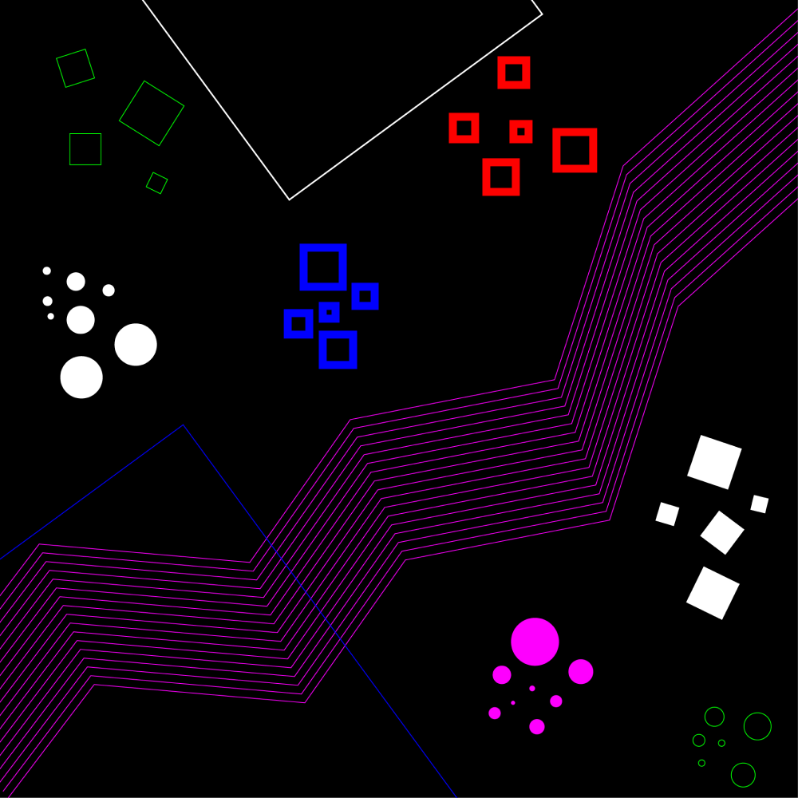
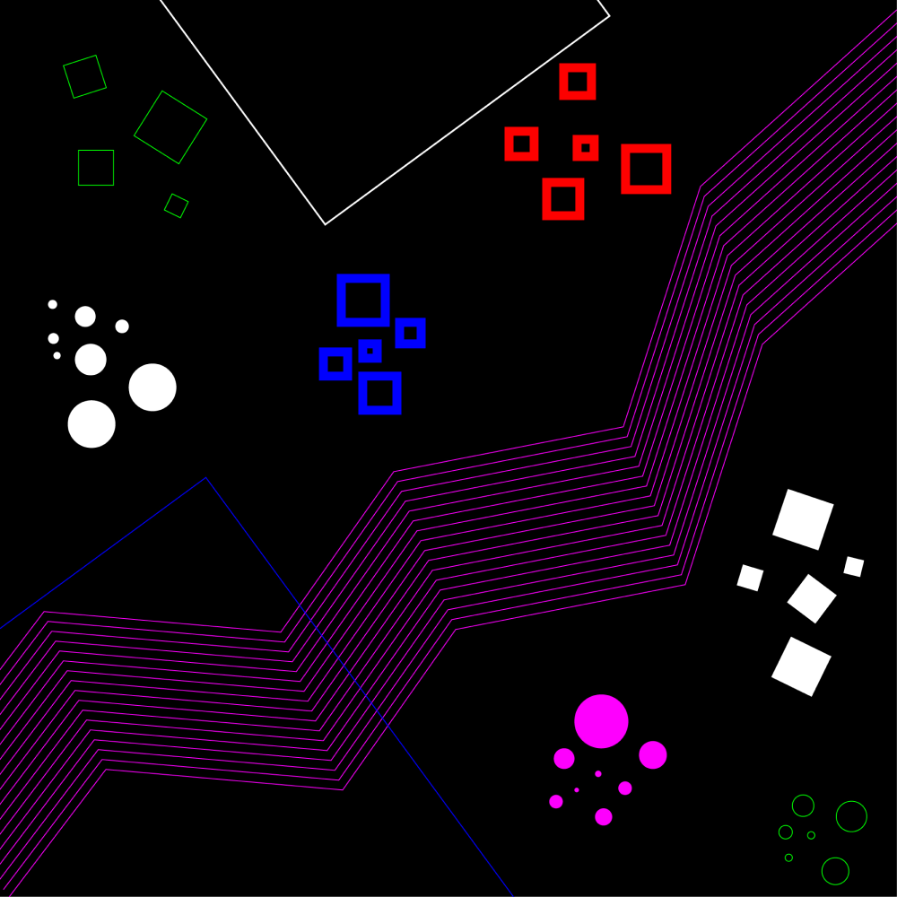

A composição ao lado faz referência à música Pop it de Anamanaguchi. Os elementos foram usados com o intuito de conferir à composição o mesmo tom de descontração presente na música. Os círculos foram utilizados para representar os sons semelhantes a bolhas estourando e os quadrados representam as batidas. Já as linhas, se assemelham aos altos e baixos sonoros.
SoBr3-o-4uToR.txt

Izadora é estudante de design e se interessa muito por áreas como ilustração e identidade visual. Instagram: @izasl